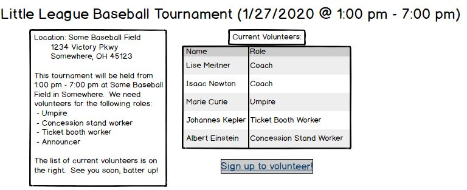

In lecture, we discussed the example of developing a platform for volunteers and administrators to perform various tasks, relating to the events needing volunteers (i.e., adding a calendar to look at upcoming events and a list of volunteers volunteering at a certain event, along with their roles. One of the most important features of this software would be the calendar. Two stories (or testable, deliverable parts of a feature) of the calendar feature are changing how the calendar is formatted (from grid to list, and vise versa) and linking the page of the event to the calendar (so that when the name of the event is clicked on, it goes to the page of the event).
The first schematic of the calendar is shown below:

This schematic shows the calendar of events. When a date is selected, the volunteer events for that day will be displayed in a list, just to the right of the calendar. The event name also shows the time(s) of the event. This will allows users to see the events happening on a certain day while not being overwhelmed with ALL off the events going on in that month. Having a setup like this allows for users to select events based on their needs (in this example, this would be an event within their availability). The user will then click on the title of the event to go to the event page.
The second schematic, of the event page, is shown below:
This schematic lays out the event page. The title of the event also includes the time and date of the event. In the event description, it includes the name of the location, as well as the address, that the event will be held. It also includes a short description of the event itself and what roles are needed. There is a chart on the right-hand side of the page displaying the names of volunteers, as well as the role of each person at the event. Finally, beneath this chart, is a link to the signup page.
Questions to consider: